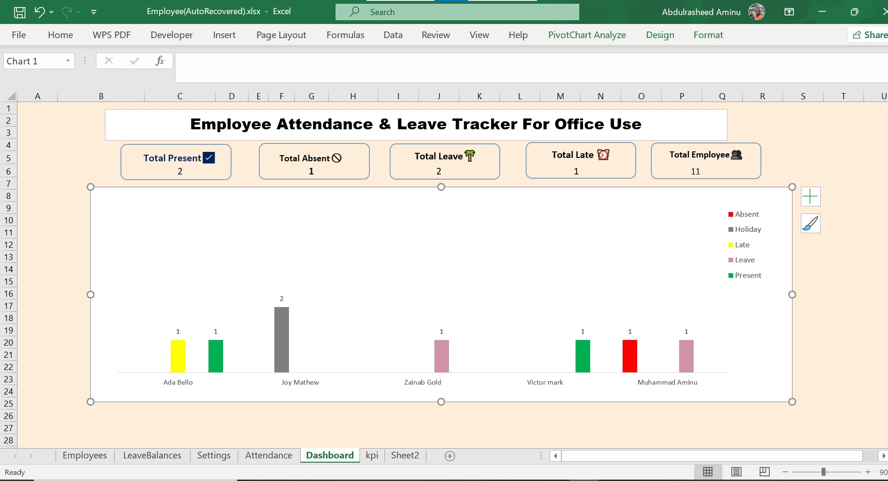
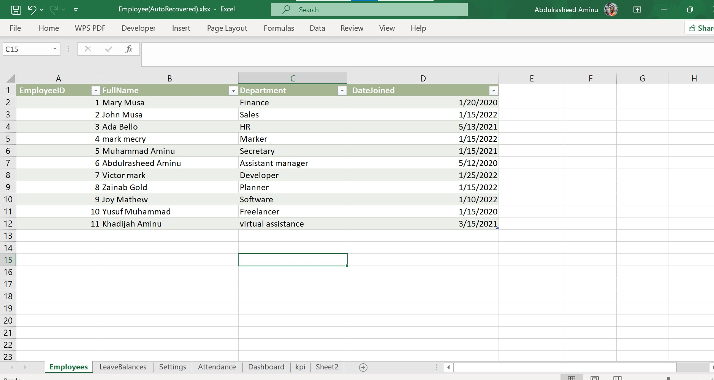
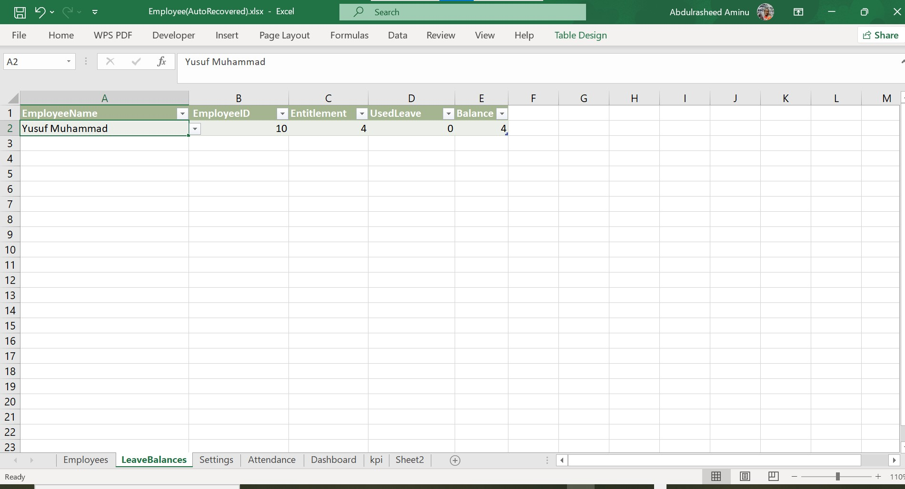
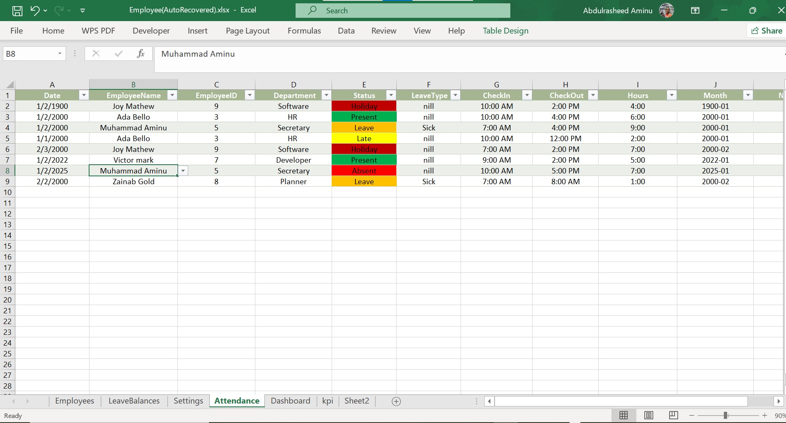

Overview
The Employee Attendance & Leave Tracker Dashboard is a fully automated
Excel-based system that helps small offices or teams track employee presence, lateness, leave,
and absenteeism. It provides interactive dashboards with real-time KPIs for HR or team leaders.
Key Metrics
👥 Total Employees
✅ Total Present
❌ Total Absent
🏖️ Total Leave
⏰ Total Late
Skills Applied
Excel
XLOOKUP
COUNTIFS
Dashboard Design
Data Analysis
Automation
Conditional Formatting
Workflow & Implementation Steps
1️⃣ Data Setup
Created structured tables for Employees, Attendance, Leave Balances, and Settings. Applied
Data Validation for clean inputs (dropdowns: Present, Absent, Leave, Late).
2️⃣ Formula Automation
Used advanced Excel formulas like XLOOKUP, COUNTIFS, and IF for automatic calculations.
Linked Employee Names to Employee IDs dynamically. Built a Leave Balance Tracker that auto-updates.
3️⃣ Dashboard Design
Designed a one-page interactive dashboard summarizing key metrics with charts, conditional formatting,
and color codes for easy visualization.
4️⃣ Data Visualization
Added column charts to compare attendance categories across employees. Used modern icons
and clear UI layout for professional presentation.
5️⃣ Testing & Optimization
Tested refresh and data updates to eliminate broken references. Optimized formulas for smooth performance.
Impact
This dashboard saves HR hours of manual work, provides real-time insights into team attendance, ensures
accurate leave tracking, and supports small business operations with data-driven decision making.
📩 Need help with automating Excel dashboards or reports?
Hire Me
← Back to Portfolio